리눅스마스터-1급 (2013-09-14 기출문제)
1과목: 리눅스 실무의 이해
1. 다음 중 운영체제의 주요 역할로 틀린 것은?
- 컴퓨터의 하드웨어를 제어한다.
- 사용자간의 하드웨어 자원을 공유할 수 있도록 한다.
- 응용 프로그램의 작성과 실행을 복잡하게 한다.
- 데이터의 조직화, 네트워크 통신 처리 기능을 수행한다.
(정답률: 80%)

2. 운영체제의 유형에 대한 설명으로 틀린 것은?
- Multi-switching : 다수의 작업이 동시 실행되나 백그라운드 프로그램만 동작하는 형태
- Single-tasking : 컴퓨터가 한 번에 하나의 작업만 처리하는 형태
- Multi-tasking : 한 사용자가 여러 개의 작업을 동시에 수행하는 시스템
- Multi-user : 단일 시스템에서 여러 사용자의 프로그램이 실행되는 형태
(정답률: 75%)
3. 다음 중 GPL(General Public License)에 관해 틀린 것은?
- 자유 소프트웨어 재단(FSF)에서 만든 자유 소프트웨어 라이센스이다.
- GNU 정신에 입각하여 모든 프로그램의 소스 코드를 공개하자는 것이 주된 목적이다.
- 법적으로 Copyleft는 Copyright의 반대말로 등록되어 있다
- 개발된 프로그램을 마음대로 배포, 복사, 수정 할 수 있다.
(정답률: 69%)
4. 무료로 다운로드할 수 있는 소프트웨어로 틀린 것은?
- Shareware
- GPL 소프트웨어
- Copyleft 소프트웨어
- 독점 소프트웨어
(정답률: 78%)
5. 다음 중 리눅스 배포판으로 틀린 것은?
- GNOME
- Mandrake
- Redhat
- Caldera
(정답률: 74%)
6. 데이터 손실을 최소화하기 위하여 동일한 데이터를 분할하여 2개 이상의 하드에 분산 저장시키는 방법인 RAID에 대한 설명 중 틀린 것은?
- RAID-0 : 빠른 입출력 속도가 요구되나, 오류 극복을 못하므로 장애 복구 능력이 필요없는 경우에 적합하다.
- RAID-1 : 디스크 미러링을 사용하며, 동일한 데이터를 가진 최소 2개의 드라이브로 구성된다.
- RAID-3 : 에러 체크 및 수정을 위해서 패리티 정보를 별도의 디스크에 따로 저장한다.
- RAID-5 : 다른 드라이브들간에 분포되어 있는 2차 패리티 구성을 포함함으로써 매우 높은 고장 대비 능력을 제공한다.
(정답률: 58%)
7. 리눅스를 구성하는 요소 중 시스템의 하드웨어를 제어하는 임무를 수행하며 항상 주기억 장치에 상주하고 있는 것으로 알맞은 것은?
- Shell
- Kernel
- Interrupt
- Application
(정답률: 75%)
8. 다음 중 시스템에서 사용하는 각종 프로그램들의 컴파일되지 않은 소스 파일들이 저장되어 있는 디렉터리로 알맞은 것은?
- /usr/src
- /usr/sbin
- /usr/lib
- /usr/etc
(정답률: 73%)
9. 다음 중 X 윈도우 시스템에 대한 설명으로 틀린 것은?
- GUI 환경을 제공하는 클라이언트/서버 시스템이다.
- X 윈도 시스템에서 클라이언트와 서버는 반드시 다른 기계/시스템에서 운용되어야 한다.
- 리눅스를 비롯해 대부분의 유닉스에서 사용되고 있다.
- cp, mv 등의 명령어를 이용하지 않고 마우스로만 파일의 복사, 이동 등을 할 수 있다.
(정답률: 68%)
10. 다음 중 콘솔에서 “startx” 입력 시 X 윈도가 실행되지 않고 에러가 발생했을 때 설정해 주는 명령으로 알맞은 것은?
- Xconfig
- Xconfigurator
- Xeditor
- Xcontrol
(정답률: 68%)
11. 다음 중 Shell의 종류로 틀린 것은?
- Bourne Shell
- Korn Shell
- C Shell
- X Shell
(정답률: 70%)
12. 다음 중 쉘에서 명령어를 백그라운드로 실행하고자 할 경우에 사용되는 기호로 알맞은 것은?
- &&
- &
- $
- *
(정답률: 75%)
13. 다음 중 프로세스 관련 용어에 대한 설명으로 틀린 것은?
- 프로그램: 특정 기능을 수행하기 위한 명령어의 조합
- 프로세스: 프로그램의 일부로 공통적으로 사용되는 특정 루틴
- 프로세서: 연산을 수행하고 처리하기 위한 자원, 보통 CPU를 말함.
- 작업: 프로그램과 프로그램 실행에 필요한 입력 데이터
(정답률: 59%)
14. 인터럽트의 종류와 설명으로 서로 틀린 것은?
- 클록 인터럽트: 시스템 관리자가 콘솔 터미널에서 인터럽트 키를 누를 때 발생
- 프로세스간 통신 인터럽트: 임의의 프로세스가 지역 호스트 또는 원격 호스트의 다른 프로세스로부터 통신 메시지를 받을 경우에 발생
- 시스템 호출 인터럽트: 실행중인 프로세스가 입출력 등을 위한 시스템 호출을 하였을 때 발생
- 하드웨어 검사 인터럽트: 하드웨어상의 오류가 있을 때 발생
(정답률: 59%)
15. 다음 ( 괄호 ) 안에 들어갈 내용으로 알맞은 것은?
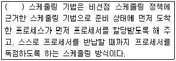
- FIFO
- RR
- SPN
- SRTN
(정답률: 71%)
16. 다음 OSI Layer 중에서 아래 설명으로 알맞은 것은?
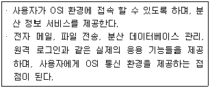
- 데이터 링크 계층
- 전송 계층
- 표현 계층
- 응용 계층
(정답률: 71%)
17. TCP/IP에 대한 설명으로 틀린 것은?
- IP주소는 32bit로 구성되어 있다.
- TCP는 패킷들의 전송흐름을 제어하는 역할을 한다.
- TCP/IP에서 목적지 컴퓨터의 IP주소에 대한 MAC주소를 알아내는 역할을 담당하는 프로토콜은 ICMP다.
- IP(Internet Protocol)은 데이터그램의 분열과 재배열, IP주소의 정의, 데이터그램 라우팅의 역할을 담당한다.
(정답률: 67%)
18. 다음 중 리눅스가 지원하는 네트워크 인터페이스 환경 설정과 관련된 파일들이 저장되는 디렉터리로 알맞은 것은?
- /etc/sysconfig/network
- /etc/hosts
- /etc/sysconfig/network-scripts
- /etc/network/interfaces
(정답률: 60%)
19. 네트워크 명령어와 기능이 틀린 것은?
- traceroute : 패킷이 지나가는 경로를 추적하는 명령어
- ping : 시스템이 현재 네트워크에 연결되어있는지 여부를 알아보는 명령어
- netstat : 네트워크 상태를 확인해 보는 명령어
- route : 라우팅 테이블에 특정 경로를 추가하는 명령어
(정답률: 55%)
20. 다음 설명하는 것 알맞은 것은?
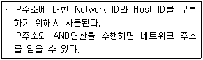
- DNS
- ARP
- ICMP
- 서브넷 마스크
(정답률: 72%)
2과목: 리눅스 시스템 관리
21. 리눅스 root계정으로 id 명령 실행 결과에 대한 설명으로 틀린 것은?
- uid=0
- gid=0
- groups=10(wheel) 그룹에 속해 있다.
- groups=1(super) 그룹에 속해 있다.
(정답률: 43%)
22. 다음 usermod 명령 옵션 설명으로 틀린 것은?
- -d : 홈 디렉터리 변경시 파일을 옮긴다.
- -e : 계정 종료일을 변경한다.
- -s : 기본 쉘을 변경한다.
- -g : 기본 그룹을 변경 한다.
(정답률: 57%)
23. 다음 사용자 그룹 관리에 대한 설명으로 틀린 것은?
- 그룹을 추가하려면 groupadd 명령어가 사용 된다.
- groupadd -r 옵션을 사용하면 gid가 0∼500 미만의 gid로 설정된다.
- 그룹을 삭제하면 해당 그룹에 속해있는 사용자는 해당 그룹에서 자동 제외된다.
- 그룹을 삭제 하려면 groupdel 명령어에 그룹명을 주면 된다.
(정답률: 51%)
24. 다음 root 계정에서 "su - linux" 명령 실행 설명으로 틀린 것은?
- linux 사용자로 전환 한다.
- root의 그룹 권한도 부여된다.
- linux 사용자의 환경변수를 사용 할 수 있다.
- 접속을 유지한 상태에서 로그아웃 없이 전환 할 수 있다.
(정답률: 64%)
25. 다음 중 os(gid:1000) 그룹과 linux(uid:510) 사용자를 생성하는 방법으로 알맞은 것은?
- useradd -g os -u linux
- useradd -g 1000 os -u 510 linux
- groupadd -g 1000 os && useradd -g 1000 -u 510 linux
- groupadd -g 1000 os -u 510 linux
(정답률: 54%)
26. 다음 "cd /var/lib/games" 명령 수행 후 최상위 “/” 경로로 이동이 가능한 명령으로 알맞은 것은?
- cd root
- cd ../
- cd ./
- cd ../../../
(정답률: 68%)
27. 다음 mkfs 명령 옵션 설명으로 틀린 것은?
- -V : 자세한 정보를 보여준다.
- -l : 파일 시스템에 이름표(label)을 부여한다.
- -c : 파일 시스템을 만들기 전에 bad 블록 검사를 한다.
- -t : 파일 시스템 종류를 지정할 때 사용한다.
(정답률: 46%)
28. 다음과 같은 조건으로 마운트 하려고 할 경우에 알맞은 것은?
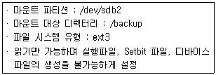
- mount -t ext3 -o ro,suid /backup /dev/sdb2
- mount -t ext3 -o ro,user /backup /dev/sdb2
- mount -t ext3 -o ro,user /dev/sdb2 /backup
- mount -u -t ext3 -o ro /dev/sdb2 /backup
(정답률: 55%)
29. 다음 /dev/sdc1을 자세한 정보를 보여 주면서 언마운트 하는 명령으로 알맞은 것은?
- umount -v /dev/sdc1
- gumount -a /dev/sdc1
- umount -n /dev/sdc1
- umount /dev/sdc1
(정답률: 63%)
30. 다음 “fdisk /dev/sdb“ 입력후 command(m for help) 프롬프트 설명으로 틀린 것은?
- d : 파티션 삭제
- l : 리눅스에서 지원 가능한 파티션 목록 보기
- q : 빠른 파티션 설정
- p : 현재 파티션 설정 상태 확인
(정답률: 57%)
31. 다음 ps 명령어의 옵션에 대한 설명으로 틀린 것은?
- -v : 메모리 중심 형태로 출력한다.
- -l : 가장 간결한 형태로 출력한다.
- -a : 다른 사용자들의 프로세스도 보여준다.
- -u : 각 프로세스의 사용자 이름과 시작 시간을 보여준다.
(정답률: 43%)
32. 다음 중 kill 명령어 실행시 시그널의 종류를 지정 하지않을 경우에적용되는기본 시그널로알맞은것은?
- SIGHUP(1)
- SIGKILL(9)
- SIGTERM(15)
- SIGSTOP(19)
(정답률: 50%)
33. 다음 kill 명령어 옵션 중 시그널 목록을 출력하기 위한 옵션으로 알맞은 것은?
- -p
- -l
- -h
- -s
(정답률: 62%)
34. top 실행 중 사용하는 명령어에 대한 설명으로 틀린 것은?
- k : kill 명령
- q : top 프로그램 종료
- h : 명령어 목록보기
- r : 화면 갱신
(정답률: 47%)
35. quota를 적용하기 위해 현재 상태를 체크하기 위한 명령어로 알맞은 것은?
- quotacheck -avug
- quota --check
- quotaon -avug
- repquota –a
(정답률: 50%)
36. 다음 rpm 패키지 설치 시 의존성(Dependency)에 상관없이 강제로 설치 옵션으로 알맞은 것은?
- -y
- -force
- --deps
- --nodeps
(정답률: 59%)
37. 다음 yum update를 수행하고자 할 때 설치여부를 묻지 않고 바로 진행되는 옵션으로 알맞은 것은?
- -y
- -force
- --dupes
- --nodeps
(정답률: 50%)
38. 다음 “yum"과 "apt-get"의 명령어 설명으로 틀린 것은?
- apt-get update는 Ubuntut에서 주로 사용된다.
- apt-get update와 yum update는 패키지를 업데이트를 수행하는 명령어다.
- yum update는 Redhat에서 주로 사용된다.
- apt-get -y옵션과 yum –y옵션은 동일하다.
(정답률: 41%)
39. 다음 중 커널이나 소스패치를 할 때 소스의 일부를 자동으로 변경해 주는 유틸리티로 알맞은 것은?
- diff
- make
- gcc
- patch
(정답률: 45%)
40. 데비안 패키지 관리인 dpkg에 대한 설명으로 틀린 것은?
- 사용 가능한 패키지 목록만 갱신하는 기능을 가지고 있다.
- 시스템에서 제거된 패키지 목록들을 알려준다.
- 의존성 체크기능을 가지고 있다.
- 자동 설치가 가능한 실행 프로그램 작성기능을 제공한다.
(정답률: 49%)
41. 리눅스에서의 장치 설정 중 플러그 앤 플레이(PnP) 기능에 관한 설명이 틀린 것은?
- 모뎀과 네트워크 카드, 사운드 카드 등의 각종 하드웨어(장치)를 찾아낸 장소를 자동적으로 소프트웨어에 알려준다.
- 물리적 장치와 이것을 조작하는 소프트웨어(장치 드라이버)와 일치시킨다.
- 운영체제가 물리적 장치를 인식할 수 있게하는 소프트웨어이다.
- 장치와 드라이버 사이에 통신 채널을 만든다.
(정답률: 51%)
42. 다음 중 프린터 관련 정보가 저장되어 있는 파일로 알맞은 것은?
- /etc/printcap
- /etc/printcap.conf
- /etc/printcap.local
- /etc/printconf
(정답률: 35%)
43. 프린터 설정파일에서 사용되는 옵션의 의미로 틀린 것은?
- sd : spool directory를 말하는 것으로 프린트 할 데이터를 프린터에 보내기 전에 임시로 저장할 디렉터리를 말한다.
- sh : suppress headers를 말하며 디폴트는 헤더 출력을 하지 않는다.
- lp : 프린터할 데이터 목록을 표시한다.
- if : 입력 필터를 말한다.
(정답률: 36%)
44. 커널 컴파일 과정 중 커널이미지를 생성하는 명령어로 알맞은 것은?
- make clear
- make bzImage
- make dep
- make modules
(정답률: 61%)
45. 다음 중 커널 컴파일을 위한 환경설정에 사용되는 명령어로 틀린 것은?
- make xconfig
- make menuconfig
- make config
- make mrproper
(정답률: 43%)
46. 다음 중 커널에 탑재되어 있는 모듈을 확인하는 명령어로 알맞은 것은?
- insmod
- rmmod
- lsmod
- modprobe
(정답률: 58%)
47. 다음 중 현재 사용 중인 리눅스 시스템의 CPU 모델 정보를 확인 하는 명령어로 알맞은 것은?
- more /proc/pci
- more /proc/crypto
- more /proc/cpuinfo
- more /proc/interrupts
(정답률: 66%)
48. 디스크의 물리적 손상(Bad Block)을 검사하는 명령어로 알맞은 것은?
- fsck
- fdisk
- badblocks
- block
(정답률: 51%)
49. 다음 중 리눅스에서 스캐너를 사용하기 위해 설치하는 패키지로 알맞은 것은?
- GHOST
- SANE
- GIMP
- XMMS
(정답률: 64%)
50. 다음 중 리눅스에서 사운드를 지원하지 않는 경우에 관련 설정을 하는 과정에 대한 설명으로 틀린 것은?
- /etc/sound.conf 파일에 사운드 카드 드라이버를 확인한다.
- 사운드를 지원하도록 커널을 설정하고 생성한다.
- 사운드 장치 파일을 생성한다.
- 사운드 카드 설치하고 필요한 경우에만 플러그 앤 플레이 설정을 한다.
(정답률: 36%)
51. 다음 중 리눅스 시스템 디렉터리 구조에 해당되는 영역으로 알맞은 것은?
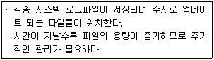
- /sys 하위 디렉터리
- /var 하위 디렉터리
- /home 하위 디렉터리
- /dev 하위 디렉터리
(정답률: 60%)
52. 다음 조건으로 crontab 파일에 설정할 때 알맞은 것은?
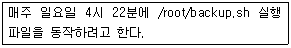
- 4 22 * 0 * /root/backup.sh
- 4 22 * * 0 /root/backup.sh
- 22 4 * 0 * /root/backup.sh
- 22 4 * * 0 /root/backup.sh
(정답률: 55%)
53. 다음 중 비밀번호를 암호화하여 저장하고 있는 파일로 알맞은 것은?
- /etc/passwd
- /etc/password
- /etc/shadow
- /etc/md5
(정답률: 63%)
54. 다음 /etc/passwd 항목 중 5번째 필드에 들어가는 정보로 알맞은 것은?
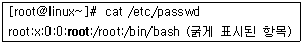
- GID
- 설명
- 패스워드
- UID
(정답률: 57%)
55. 다음 중 cat 명령어를 이용하여 ssh 접속에 실패한 기록을 보기 위한 파일로 알맞은 것은?
- /var/log/btmp
- /var/log/last
- /var/log/lastlog
- /var/log/secure
(정답률: 48%)
56. 다음 중 리눅스시스템 부팅과정에 발생한 데몬 에러를 관련 정보를 확인하기 위한 로그파일로 알맞은 것은?
- /var/log/boot.log
- /var/log/dmesg
- /var/log/lastlog
- /var/log/secure
(정답률: 46%)
57. 다음 중 sudo를 설정하기 편집시 사용하는 명령어로 가장 알맞은 것은?
- vi /etc/sudo
- vi /etc/sudoers
- visudo
- visudoers
(정답률: 39%)
58. 다음 백업을 dump 명령어로 수행하고자 할 때 특징으로 틀린 것은?
- 디스크 단위의 백업만 가능하다.
- 증분 백업을 수행할 수 있다.
- 여러 개의 백업을 동시에 수행 할 수 있다.
- 권한 및 소유자 등 정보를 포함하여 백업, 복구 할 수 있다.
(정답률: 50%)
59. 다음 tar와 bzip2 명령어 중 압축과 해제 옵션이 바르게 짝지어 진 것으로 알맞은 것은?
- 압축: tar -jcvf / 압축해제: tar -jxvf
- 압축: tar -zxvf / 압축해제: tar -zcvf
- 압축: tar -zcvf / 압축해제: tar -zxvf
- 압축: tar -jxvf / 압축해제: tar –jcvf
(정답률: 52%)
60. 다음 tar 명령어 중 심볼릭 링크가 가리키는 파일을 묶어주는 옵션으로 알맞은 것은?
- 특별한 옵션을 주지 않아도 수행된다.
- -z
- -h
- -m
(정답률: 37%)
3과목: 네트워크 및 서비스의 활용
61. 다음 중 HTTP(HyperText Transfer Protocol)의 설명으로 틀린 것은?
- 인터넷에서 하이퍼텍스트(hypertext)문서를 교환하기 위해 사용되는 통신규약이다.
- 1989년 CERN(유럽입자 물리학 연구소)팀 버너스 리(Tim Berners Lee)에 의해 처음 설계 되었다.
- 월드 와이드 웹(World-Wide Web)에서 모든 정보를 볼 수 있도록 해주는 응용프로그램이다.
- 인터넷을 통한 월드 와이드 웹(World-Wide Web)기반에서 전 세계적인 정보공유를 이루는데 큰 역할을 하였다.
(정답률: 44%)
62. 다음 중 웹브라우저의 특징으로 틀린 것은?
- 모자이크(Mosaic) - 1993년 일리노이 대학의 국립 슈퍼컴퓨터 활용센터에서 개발한 웹브라우저
- 네스케이프(Netscape) - 미국 네스케이프 커뮤니케이션사가 만든 최초의 상업용 웹브라우저
- 인터넷 익스플로어(Internet Explorer) - 마이크로소프트에서 개발한 윈도우 기반의 웹브라우저
- 파이어폭스(Firefox) - 모질라 프로젝트(Mozilla Project)에서 지원하는 상업용 웹브라우저
(정답률: 45%)
63. 다음 중 웹 관련 서비스중 CGI에 대한 설명으로 틀린 것은?
- 외부의 프로그램을 실행시켜 그 결과를 HTML로 돌려주는 방식이다.
- CGI 스크립트는 어떤 언어로 코딩될 수 있으며, CGI 프로토콜이 단순하여 사용이 간단하다.
- 프로세스의 생성과 초기화에 상당한 시간이 필요하다.
- 여러 개의 CGI 스크립트를 계속해서 동작시키면 프로세스가 많이 생성되지만 서버내의 메모리 자원에는 영향이 없다.
(정답률: 51%)
64. 다음 보기 중 아파치 웹서버의 소스 설치 순서로 알맞은 것은?
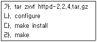
- 나-가-다-라
- 가-다-나-라
- 가-나-라-다
- 라-다-가-나
(정답률: 50%)
65. 다음 중 오픈소스 데이터베이스의 라이선스 정책의 설명으로 틀린 것은?
- MySQL : 오픈소스 라이선스인 GPL 라이선스로 누구나 무료로 사용이 가능하다.
- PostgreSQL : BSD 라이선스로 배포되며 오픈소스 개발자 및 관련 회사들이 개발에 참여한다.
- MariaDB : MySQL을 기반으로 하는 오픈소스 DBMS로 GPL v2 라이선스를 사용한다.
- CUBRID : 국내 오픈소스 DBMS로 서버엔진은 GPL v2 라이선스를, 인터페이스 부분은 BSD 라이선스 정책을 사용한다.
(정답률: 31%)
66. 다음 보기의 설명으로 알맞은 것은?
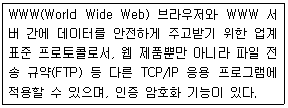
- CGI(Common Gateway Interface)
- AJP(Apache JServ Protocol)
- SSL(Secure Sockets Layer)
- SSH(Secure Shell)
(정답률: 47%)
67. 다음은MySQL 환경설정 시옵션설명으로 틀린것은?
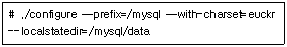
- mysql의 설치 디렉터리는 /mysql이다.
- mysql의 언어는 euckr 한글을 지원한다.
- mysql의 데이터베이스 프로세스의 위치는 /mysql/data이다.
- mysql의 설치는 위 옵션 사항이외에 나머지는 기본값으로 설치한다.
(정답률: 41%)
68. 다음 보기 중 아파치 웹서버의 가상호스트에 대한 설명으로 틀린 것은?
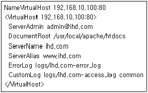
- IP주소가 192.168.10.100으로 네임 가상호스트를 설정한다.
- 가상호스트의 관리자 메일주소는 www@ihd.com 이다.
- 가상호스트의 도메인 이름은 ihd.com 또는 www.ihd.com이다.
- ihd.com 의 홈페이지 웹문서가 위치하는 곳은 /usr/local/apache/htdocs이다.
(정답률: 53%)
69. 다음 보기는 무엇에 대한 설명으로 알맞은 것은?
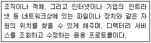
- AD(Active Directory)
- LDAP(Lightweight Directory Access Protocol)
- NIS(National Information System)
- NDS(NetWare Directory Service)
(정답률: 44%)
70. 다음 중 SMB(Server Message Block)의 기능으로 틀린 것은?
- 리눅스 파티션(디렉터리)와 윈도우와의 공유
- 윈도우 파티션(디렉터리)와 리눅스의 공유
- 리눅스의 프린터와 윈도우의 공유
- 윈도우 모니터와 리눅스와의 공유
(정답률: 46%)
71. 다음 /etc/smb/smb.conf 파일의 인증레벨 대한 설명으로 틀린 것은?
- share : 사용자가 요청한 자원을 사용자/패스 워드 인증을 거치지 않고 연결한다.
- user : 사용자/패스워드 인증을 통해 삼바서버에 접근한다.
- server : 사용자 계정의 인증방식을 다른 SMB 프로토콜을 지원하는 서버를 통해 처리한다.
- domain : 사용자 계정의 인증방식을 DNS 도메인에서 처리하는 방식이다.
(정답률: 34%)
72. 다음 보기 중 SMB 서버의 공유정의 설정 옵션에 대한 설명으로 틀린 것은?
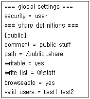
- 클라이언트에서 test1, test2 사용자는 public 이라는 공유 디렉터리에 접근할 수 있다.
- test1, test2 사용자는 public 디렉터리에 읽기, 쓰기가 가능하다.
- staff 사용자는 public 디렉터리에 읽기, 쓰기가 가능하다.
- 삼바서버의 공유 디렉터리의 공유이름은 public이다.
(정답률: 37%)
73. 다음 보기에서 설명하는 것으로 알맞은 것은?
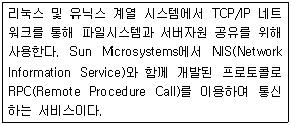
- NFS(Network File System)
- DNS(Doman Name Server)
- CIFS(Common Internet File System)
- FTP(File Transfer Protocol)
(정답률: 51%)
74. 다음 중 /etc/exports 파일 옵션에 대한 설명으로 틀린 것은?
- root_squash : 클라이언트에서 접근하는 root 사용자를 nobody 사용자로 매핑
- no_root_squash : 클라이언트에서 접근하는 root사용자를 root사용자로 매핑
- insecure : 인증되지 않은 엑세스도 가능
- sync : 클라이언트가 파일쓰기를 완료 후 디스크를 비동기적으로 처리
(정답률: 39%)
75. 다음 중 vsftp 서비스 관련 파일에 대한 설명으로 틀린 것은?
- ftpusers : vsftpd의 사용을 허용할 사용자 계정을 등록하는 파일
- user_list : 기본값으로는 vsftpd사용을 제한할 사용자 계정을 등록하는 파일(userlist_deny=yes)
- vsftpd.conf : vsftpd의 환경설정 파일
- xferlog : ftp 표준 포맷으로 로그를 기록하는 파일
(정답률: 27%)
76. 다음 보기의 설명으로 알맞은 것은?
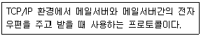
- POP3(Post Office Protocol Version 3)
- SMTP(Simple Mail Transfer Protocol)
- IMAP(Inter Mail Access Protocol)
- SNMP(Simple Network Management Protocol)
(정답률: 50%)
77. 다음 중 sendmail 관련 설정 파일에 대한 설명으로 틀린 것은?
- local-host-names : 메일을 받을 수 있는 호스트들을 등록한다.
- aliases : 특정 ID로 들어오는 메일을 여러 사람에게 전달하는 파일이다.
- access : 메일서버에 접근하는 호스트 및 서버에 대한 설정이 저장되는 파일이다.
- sendmail.cf : sendmail의 매크로 설정 파일로 m4라는 전처리기로 환경설정파일을 새롭게 생성할 때 이용하는 파일이다.
(정답률: 33%)
78. 다음 보기의 ( 괄호 ) 내용으로 알맞은 것은?
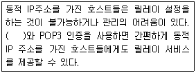
- MDA(Mail Delivery Agent)
- DRAC(Dynamic Relay Authorization Control)
- FQDN(Full Qualified Domain Name)
- MTA(Mail Transfer Agent)
(정답률: 33%)
79. 다음 보기에 대한 설명으로 알맞은 것은?
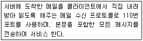
- POP3
- IMAP
- Outlook
- Procmail
(정답률: 52%)
80. 다음 보기에 대한 설명으로 알맞은 것은?
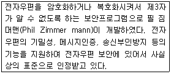
- PGP(Pretty Good Privacy)
- PEM(Privacy Enhanced Mail)
- ESMTP(Extended SMTP)
- IMAP(Interactive Mail Access Protocol)
(정답률: 33%)
81. 다음 보기에 대한 설명으로 알맞은 것은?
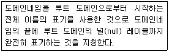
- SLD(Second Level Domain)
- TLD(Top Level Domain)
- FQDN(Fully Qualified Domain Name)
- NIC(Network Information Center)
(정답률: 50%)
82. 다음 중 DNS zone 설정의 레코드의 설명으로 틀린 것은?
- SOA : zone의 전체설정으로 반드시 첫 번째 레코드로 지정되어야 함
- A : 호스트 이름에 대응하는 IP주소
- PTR : IP주소에 대응하는 호스트 이름
- MX : 해당 zone을 담당하는 네임 서버 주소
(정답률: 36%)
83. 다음 중 네임서버 정보 검색 관련 유틸리티로 틀린 것은?
- host
- nslookup
- dig
- rndc
(정답률: 38%)
84. 다음 중 DNS 서버의 종류로 틀린 것은?
- 주 네임 서버
- 보조 네임 서버
- 호스트 네임 서버
- 캐싱 서버
(정답률: 41%)
85. 다음은 네임서버 존 파일의 정의 항목 설명으로 틀린 것은?
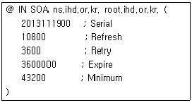
- Serial : zone 파일이 작성된 시간을 표시하는 정보 영역
- Refresh : 주 네임서버와 보조네임서버간의 정보 동기화를 위한 시간을 지정
- Retry : 주 네임서버와 정보 동기화를 실패하였을 때 다음 시도를 위해 대기하는 시간
- Expire : 주 네임서버에서 다른 네임 서버로 데이터가 전달되었을 때 데이터를 상대편 서버에 정보가 보관되는 시간
(정답률: 41%)
86. 다음에 설명된 리눅스 가상화 기술로 알맞은 것은?
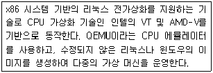
- KVM
- VirtualBox
- XEN
- Vmware
(정답률: 39%)
87. 다음 중 클라우드 컴퓨팅의 장점에 대한 설명으로 틀린 것은?
- 초기 구입비용과 비용지출이 적으며 휴대성이 높다.
- 컴퓨터 가용률이 높아 그린IT 전략과도 일치한다.
- 다양한 기기를 단말기로 사용하는 것이 가능하며 서비스를 통한 일치된 사용자 환경을 구현할 수 있다.
- 개별 정보가 어디에 있는지 물리적 위치를 파악할 수 있다.
(정답률: 48%)
88. KVM 가상화 서비스의 설치 및 구동 순서이다. ( 괄호 ) 안에 알맞은 것은?
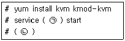
- (ㄱ) libvirtd (ㄴ) virt-manager
- (ㄱ) virt-manager (ㄴ) libvirtd
- (ㄱ) kvmd (ㄴ) kvm-manager
- (ㄱ) kvm-manager (ㄴ) kvmd
(정답률: 37%)
89. 다음 보기에서 설명하는 서버 가상화 솔루션으로 알맞은 것은?
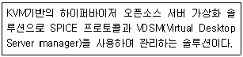
- vSphere
- RHEV
- Xen Server
- Window Server Hyper-V
(정답률: 29%)
90. 다음 중 전가상화 기술과 반가상화 기술을 모두를 지원하는 솔루션으로 알맞은 것은?
- Xen
- VirtualBox
- KVM
- OpenVZ
(정답률: 45%)
91. 다음 중 xinetd.conf 파일 속성에 대한 설명으로 틀린 것은?
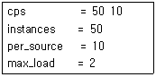
- 들어오는 접속수가 50이면 10초 동안 해당 서비스 활성화시킨다.
- 동시에 작동할 수 있는 서버의 최대수는 50이다.
- 동일 호스트로부터 서버 접속수를 10으로 제한한다.
- 서버에 대한 최대 부하값이 2이고, 이 한계를 넘으면 서버에 대한 요청은 거절한다.
(정답률: 39%)
92. 다음 보기에 대한 설명으로 알맞은 것은?
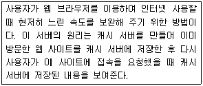
- VNC
- NTP
- Proxy
- DHCP
(정답률: 53%)
93. 다음 보기의 dhcpd.conf 설정에 대한 설명으로 틀린 것은?
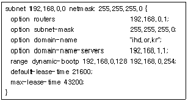
- DHCP 클라이언트에 설정되는 게이트웨이 주소는 192.168.0.1이다.
- DHCP 클라이언트에 설정되는 DNS 주소는 192.168.1.1이다.
- 동적으로 할당할 IP 주소 대역은 192.168.0.0 ∼192.168.0.254이다.
- 기본 할당 시간은 21600초이다.
(정답률: 53%)
94. 다음 보기에 대한 설명으로 알맞은 것은?
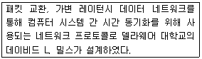
- SSI
- NTP
- FTP
- SMPP
(정답률: 44%)
95. 다음 VNC 설정에 대한 설명으로 틀린 것은?
- vnc 서버를 설정하기 위해서는 데스크탑 환경(GNOME, KDE)이 지원되도록 설치해야 한다.
- vncpasswd를 지정하여야만 사용할 수 있다.
- 외부접속을 허용하기 위해 방화벽에서 5900번 포트를 오픈해야 한다.
- root 계정으로만 vnc 사용이 가능하다.
(정답률: 46%)
96. 다음 중 DOS 공격에 대한 설명으로 틀린 것은?
- 루트 권한을 획득 하는 것이 목적이다.
- 같은 공격에 대해서 각 시스템마다 결과가 다르게 나타날 수 있다.
- 다른 공격을 위한 사전 공격으로 이용될 수 있다.
- 데이터의 파괴 및 변조, 훔쳐가는 것을 목적으로 하는 공격이 아니다.
(정답률: 48%)
97. 다음 보기에 해당하는 DOS 공격 유형 설명으로 알맞은 것은?
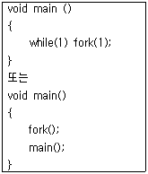
- 디스크 채우기
- 메모리 고갈
- 모든 프로세스 죽이기
- 프로세스 만들기
(정답률: 37%)
98. 다음은 iptables를 이용하여 hacker.co.kr에서 들어 오는 텔넷 서비스만 거부하는 설정이다. ( 괄호 ) 에 들어갈 내용으로 알맞은 것은?
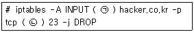
- (ㄱ) -s (ㄴ) --dport
- (ㄱ) -d (ㄴ) --dport
- (ㄱ) -s (ㄴ) --sport
- (ㄱ) -d (ㄴ) --sport
(정답률: 36%)
99. 다음 보기에 대한 설명으로 알맞은 것은?
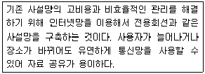
- IDS
- VPN
- DMZ
- Sniffer
(정답률: 52%)
100. 다음 보기에 대한 설명으로 알맞은 것은?
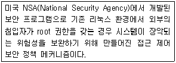
- iptables
- Kernel Dump
- Secure OS
- SELinux
(정답률: 46%)